Yeni taslaklar kullanıcı ve Mustafa onayı bekliyor. Hedef ölçüler aşağıda; görsel oranları yaklaşık, mesh-fit ve oyun içi uygunluk kontrolü bekliyor. Tripo üretimi yok.
Ölçüler, kaynak yorumlar ve korunan kararlar · Üretim kayıtları
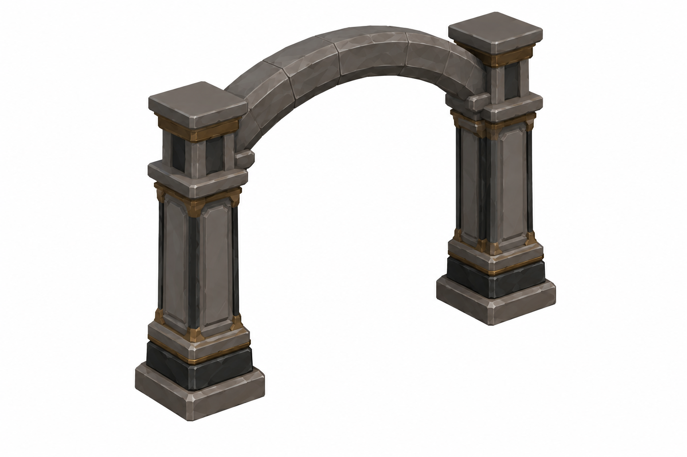
Onaylı v004 taş/oak/iron dilinden frame. Gate hedef≈4.6W×5.5H m (P); leaf açıklığı/hinge final fit bekliyor.
Üretim promptu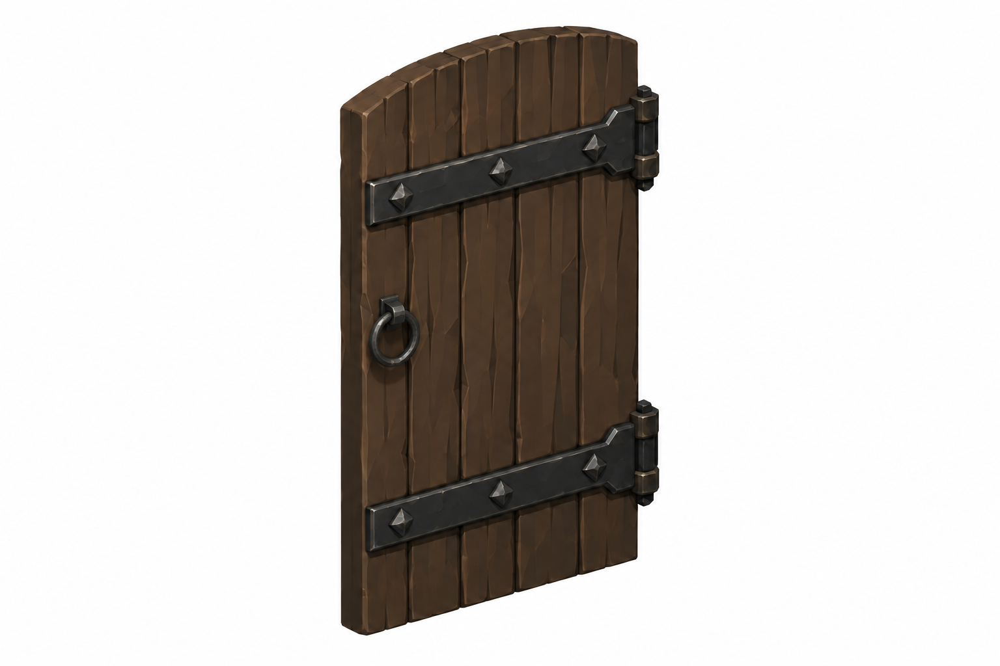
Tek sade oak leaf, örnek≈2.3W×4.5H×0.15D m (P). Hiçbir haç/amblem yok; mirror ikinci kanat.
Üretim promptu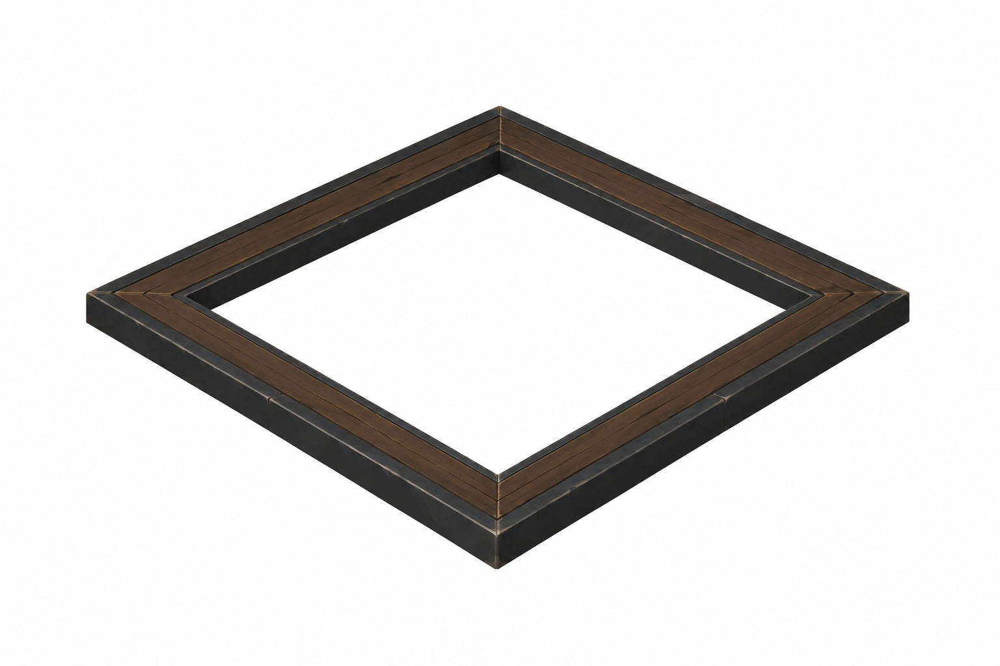
Floor-flush chute frame; 1.8×1.8 m açıklık (P). Lid ayrı.
Üretim promptu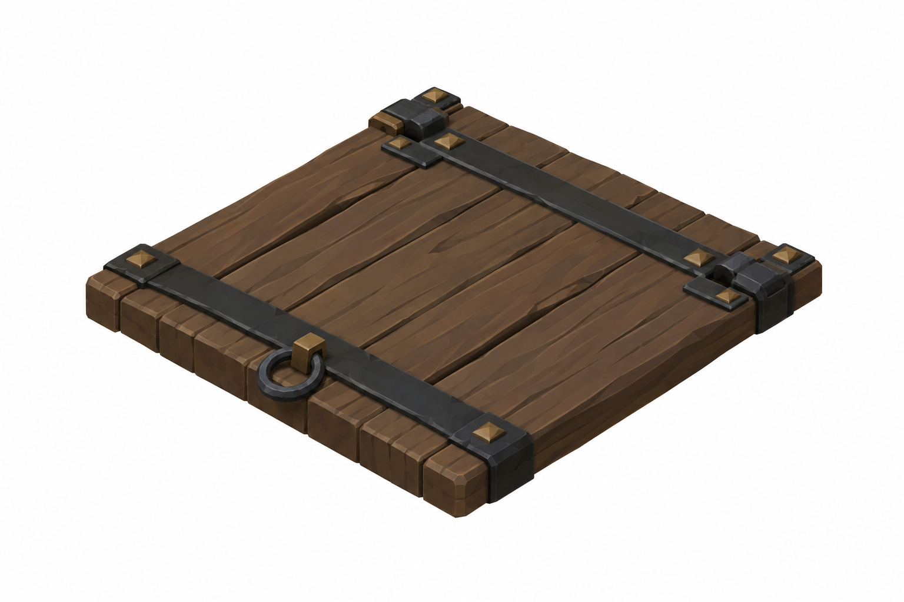
1.8×1.8×0.15 m (P) chute lid; hinge ve pull ayrı okunur.
Üretim promptu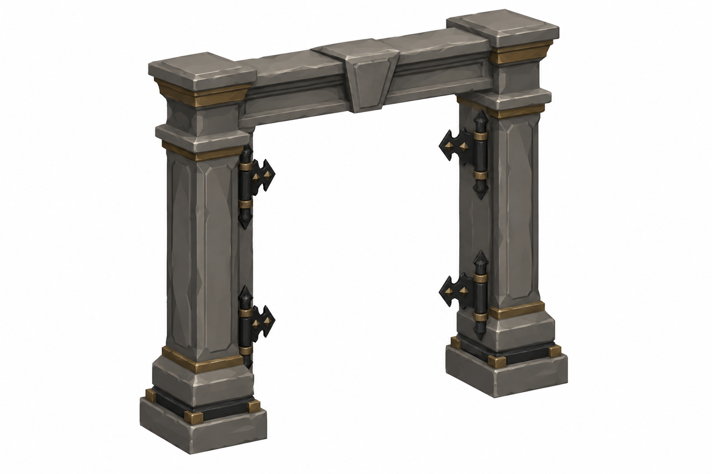
Hearse gate frame: hedef4.6W×4.5H m (P); frame/leaf mesh fit sonraki kontrol.
Üretim promptu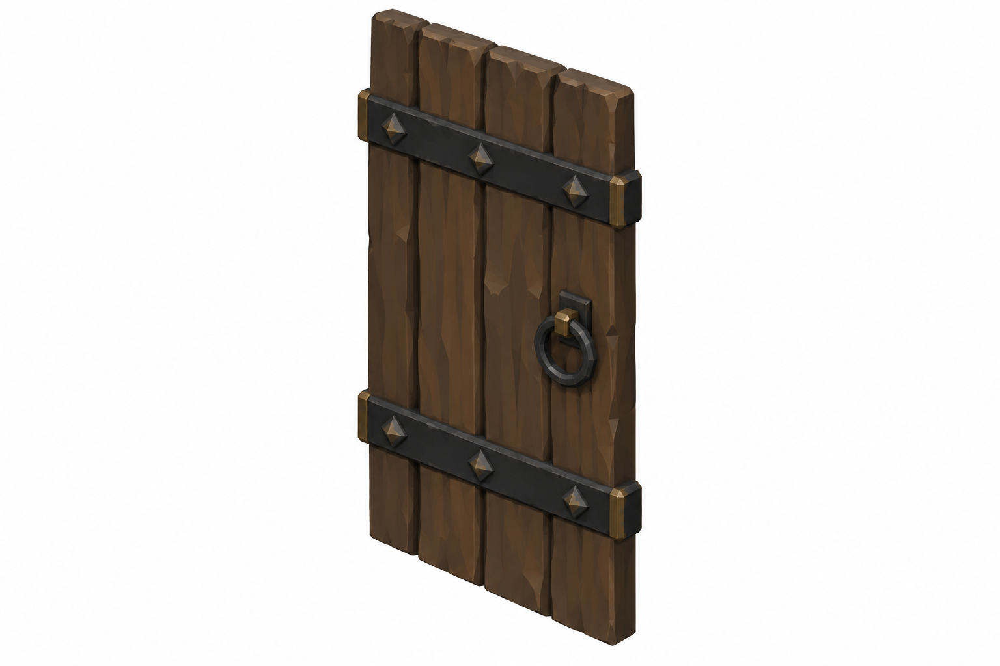
Tek hearse leaf:≈2.3×4.5×0.15 m (P), sade oak/iron. Mirror ikinci kanat.
Üretim promptu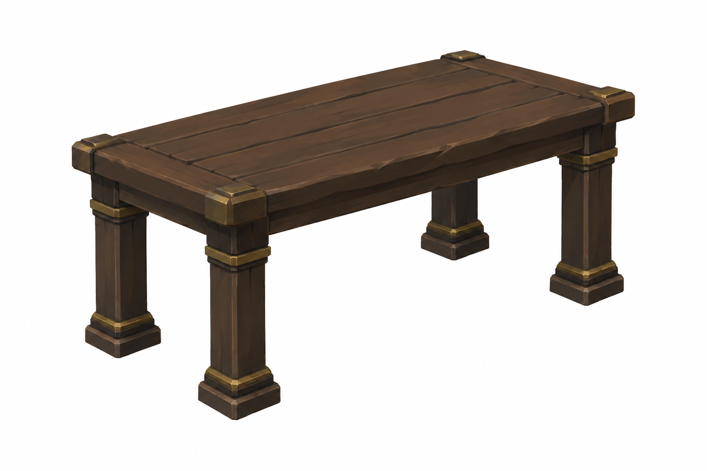
2.0W×0.8D×1.0H m (P), buyer yalnız props ile ima edilir; NPC yok.
Üretim promptu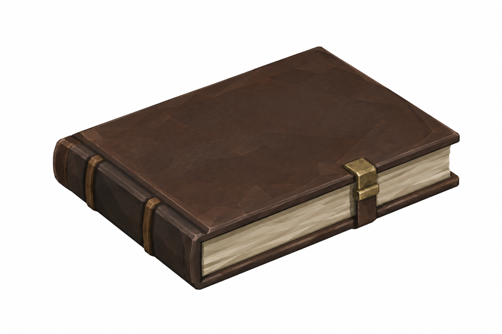
Plain buyer ledger0.30×0.22×0.06 m (P), yazı ve amblem yok.
Üretim promptu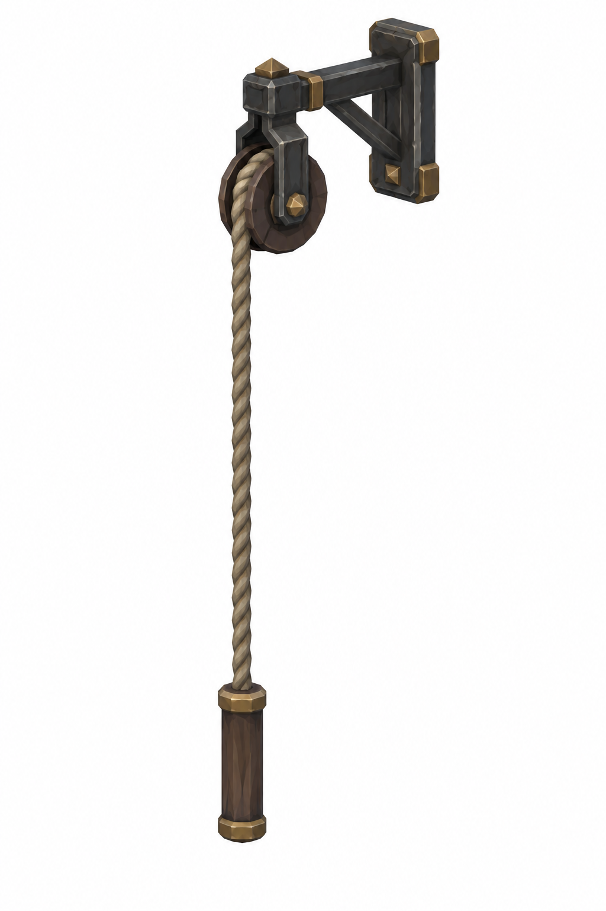
Yeni rope pull/entry bracket; mevcut Signal_Bell_01 dış kulede. Küçük bell stand yok; reuse fit bekliyor.
Üretim promptu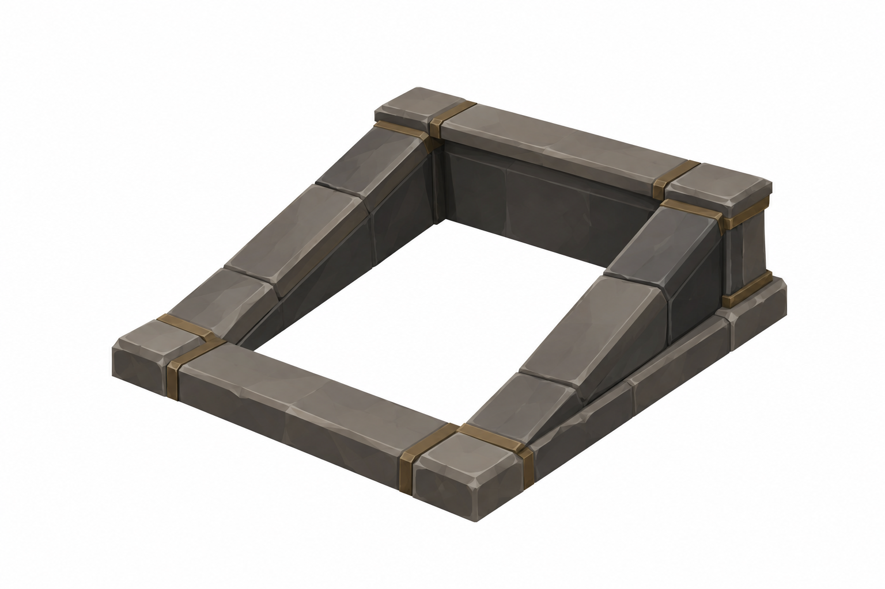
Eğimli cellar giriş2.3×2.3 m hedef (P); çizimde slope35°P, exact floor fit bekliyor.
Üretim promptu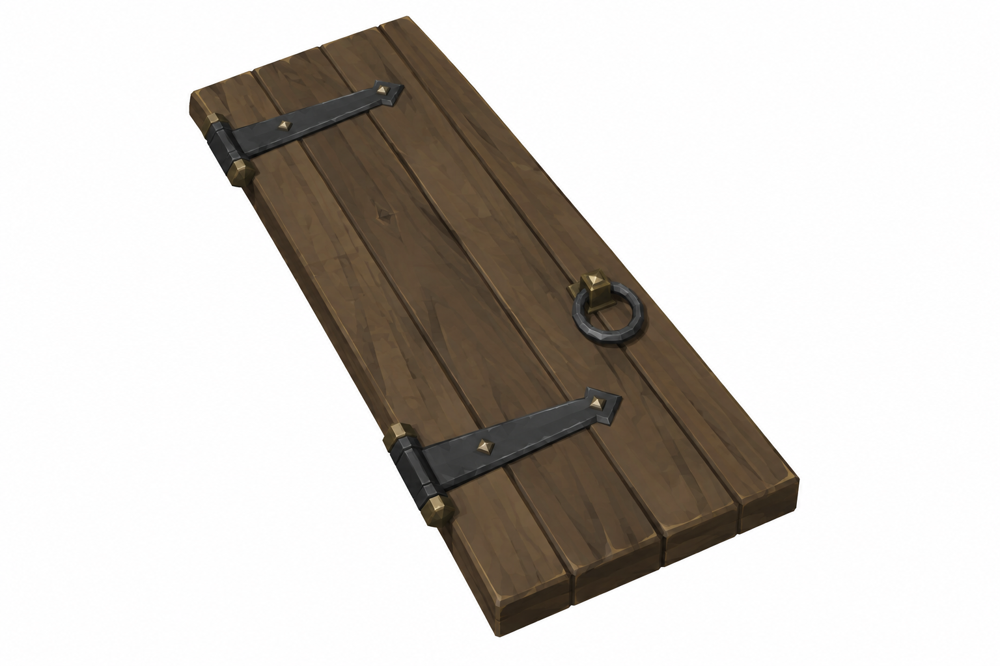
Tek eğimli cellar leaf≈1.15×2.3×0.15 m (P); iki kanat mirror, ringR2.5F.
Üretim promptuKapalı / açık / kullanım sırası. Ring hedefi R2.5 m; Knight hedefi1.59 m. AI raster oranları yaklaşık; kod/native mesh ölçümü bekliyor. E6 v004 onaylı kaynak değişmedi. E3/E5 için tek kontrollü durum düzeltmesi seçildi; ilk hatalı paftalar üretim geçmişinde tutuldu.
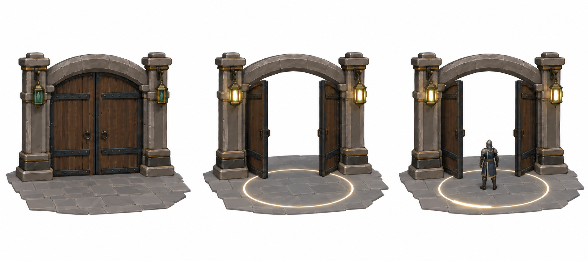
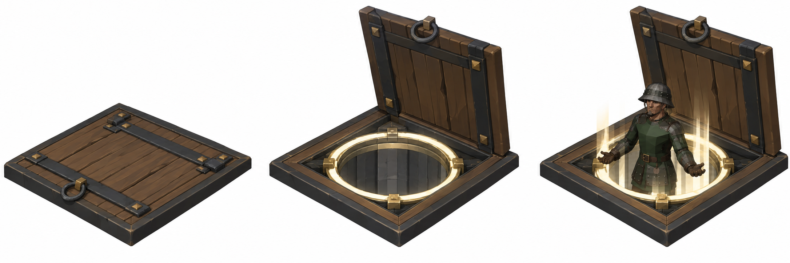
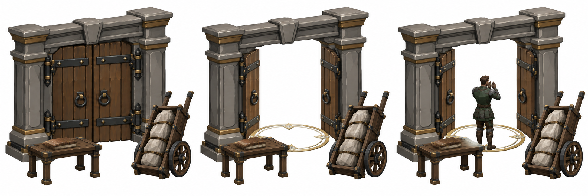
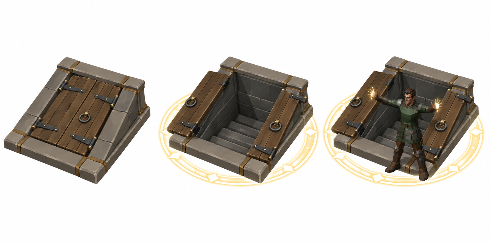
Gate_Obsidian_01 ve Signal_Bell_01 gerçek kaynakları bulunamadı. Aşağıdaki teknik şemalar yeni gate/bell tasarımı değildir; gerçek reuse mesh fit bekliyor. E4 çan dış BRAV-335 kulesinde, rope Chapel batı duvarından yerde erişilir; ring yeni merkez (-6.9,66.7). E1 hedef6.9W×6–8H m P. Ring koordinatları ve floor yükseklikleri SPEC içinde.
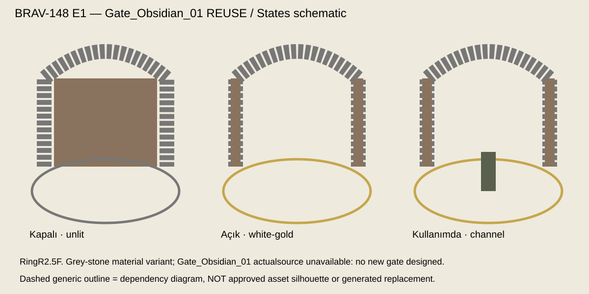
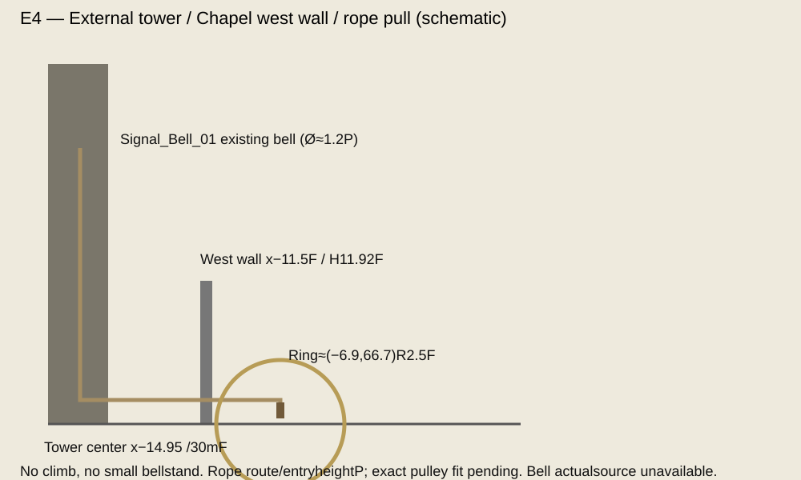
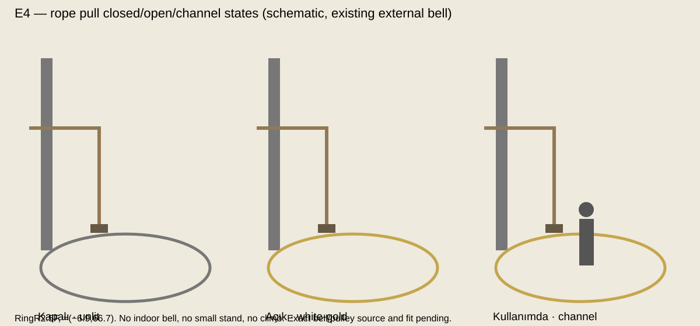
E3 cart aynı BRAV-153 iki tekerlekli kaynak: ortak cart. İkinci gate/cellar kanadı aynı leaf mirror reuse; ayrı tasarım yok.